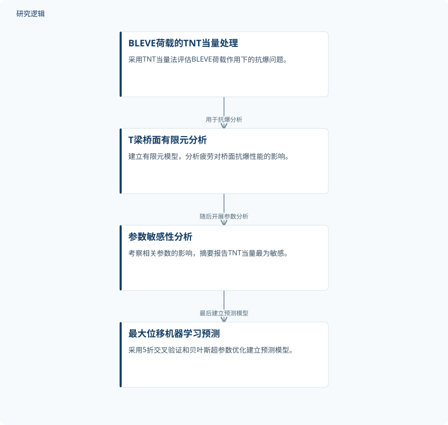

摘要解读
疲劳劣化T梁桥面板在TNT当量沸腾液体膨胀蒸气爆炸荷载下的性能
Performance of T-beam bridge decks with fatigue deterioration subjected to TNT equivalent BLEVE loads
解读更新 2026-11-10 17:53 · 依据公开摘要整理，未核验全文细节
长期重载交通造成的疲劳损伤，会怎样改变桥面结构遭遇偶发爆炸时的表现？这项研究围绕T梁桥面，将疲劳损伤、爆炸动力响应与机器学习预测联系起来，为理解服役桥梁的抗爆评估问题提供了一个具体切口。
文章目录
抗爆评估为何需要考虑既有疲劳损伤
桥梁服役期间既承受重型车辆引起的长期疲劳荷载，也可能面临危险品运输不当、交通事故或战争引发的爆炸威胁。疲劳会造成材料损伤和结构性能退化，因此，爆炸发生前的结构状态是本研究关注的关键。
作者在摘要中指出，累积疲劳损伤尚未被纳入所讨论的桥面动力行为评估。这项工作的研究问题，是带有疲劳损伤的T梁桥面在爆炸作用下如何响应，而不只是考察爆炸荷载本身。
从TNT当量与有限元分析走向位移预测
研究采用TNT当量法处理沸腾液体膨胀蒸气爆炸（BLEVE）荷载，建立T梁桥面的有限元模型，分析疲劳对抗爆性能的影响，并通过参数分析考察相关参数的敏感性。
随后，作者建立了预测疲劳损伤T梁桥面在爆炸荷载下最大位移的机器学习模型，采用5折交叉验证和贝叶斯超参数优化。摘要没有说明具体学习算法，因此不能进一步指定模型类型。
依据摘要整理的抗爆分析与预测流程


概括摘要明确陈述的研究环节，仅表示研究展开顺序，不表示未报告的数据传递或验证关系；此图不是论文原图。
下载 SVG图示关系说明
实线表示相邻阶段的信息流，虚线表示跨阶段联系或反馈。
BLEVE荷载的TNT当量处理 → T梁桥面有限元分析：用于抗爆分析；T梁桥面有限元分析 → 参数敏感性分析：随后开展参数分析；参数敏感性分析 → 最大位移机器学习预测：最后建立预测模型
疲劳削弱抗爆性能，TNT当量最为敏感
摘要报告，疲劳显著削弱了T梁桥面的抗爆能力，跨中位移增幅最高达2倍。作者将这一现象主要归因于能量耗散机制的差异，但摘要未展开具体耗能过程，也未给出各组成部分的贡献。
参数分析显示，TNT当量是所考察参数中最敏感的参数，放大效应最高达1.8倍。摘要未明确这一放大效应的具体定义与比较基准，因而不宜直接将其解释为所有工况下的位移倍数。
预测模型的适用边界仍需进一步阅读
仅凭摘要，无法判断建模样本规模、疲劳损伤水平、爆炸工况覆盖范围，以及位移增幅对应的具体比较条件。摘要也未交代模型是否经过试验或现场数据验证；这些属于当前资料无法判断的信息，不意味着论文没有开展相关工作。
摘要将该方法定位为可靠、高效的服役桥梁爆炸损伤评估途径，但未给出预测误差、计算效率或跨工况泛化结果。交叉验证与超参数优化的采用，本身不足以确定模型在实际桥梁运维中的适用范围。
阅读启发：预测位移之前，先看清损伤与荷载边界
阅读启发：对于关注结构疲劳与智能运维的读者，值得进一步查阅的是疲劳状态如何进入有限元模型、耗能机制差异如何得到解释，以及位移预测模型覆盖了哪些损伤与荷载条件。厘清这些边界，比仅关注机器学习模型的名称更有助于判断其工程参考价值。
以上为本站阅读启发与建议，不是论文已验证的结论。